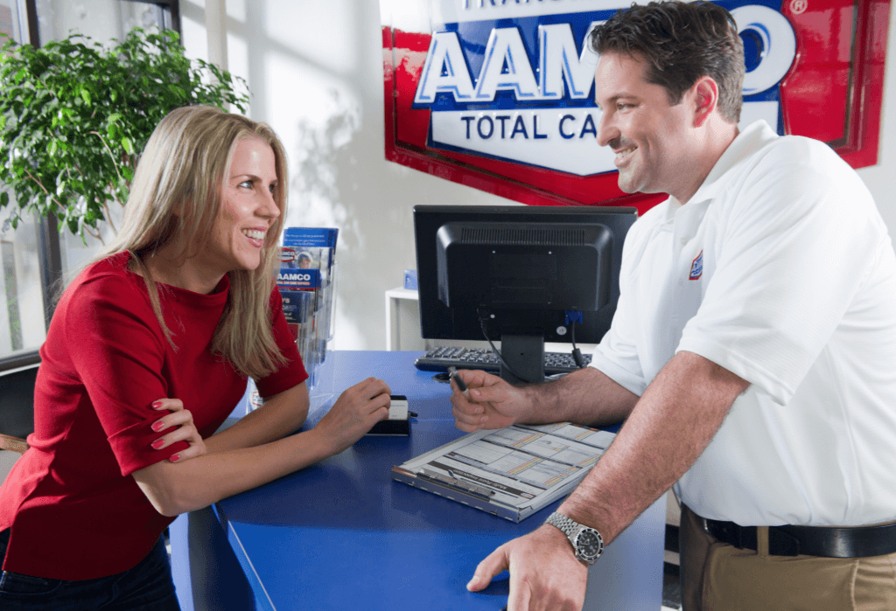

Bettering Our Community
Building Strong Ties with the Community
Reviews:
1. I took my 2016 Nissan in for a routine transmission fluid change and service. The staff was extremely friendly and professional, the service was fast with the price being exactly as quoted. The service personnel even took the time to explain specific details of my transmission and how best to extend its life. I will go back to this shop and highly recommend them.
2. Great guys here at AAMCO!! they’re really knowledgeable on all things auto, really easy to work with too. they rebuilt my transmission and it has been working well. i would definitely recommend them if you need any transmission related repairs or rebuilds, they can probably help you with other problems too. 10/10. Max is a nice guy too
Ways We Build our Community
As you can see these reviews from customers are they kind of thing that we strive for when performing maintenance on your vehicles. Furthermore we try to build our community up by getting our name out there and providing assistance to all those who may need it. Here are some examples of building a community.
Customer Engagement: AAMCO Transmissions can create opportunities for customers to engage with the brand and each other. This can be achieved through various channels, such as social media platforms, online forums, and community events. Encouraging customers to share their experiences, ask questions, and provide feedback helps create a sense of belonging and involvement.
Loyalty Programs: Implementing a loyalty program that rewards customers for their continued patronage can help foster a sense of community. Offering exclusive benefits, discounts, or rewards to loyal customers encourages their ongoing engagement and can also incentivize them to refer others to AAMCO Transmissions.
Community Partnerships: Collaborating with local businesses or organizations that share common interests, such as automotive clubs or charitable organizations, can help AAMCO Transmissions build a broader community network. By participating in joint events or initiatives, AAMCO can demonstrate its commitment to the community and strengthen its brand reputation.
Customer Appreciation Events: Hosting customer appreciation events, such as open houses or customer appreciation days, provides an opportunity to connect with customers on a personal level. These events can include activities like facility tours, complimentary vehicle inspections, or informative sessions about automotive maintenance.
Charitable Involvement: Participating in local charity initiatives or supporting community causes allows AAMCO Transmissions to contribute positively to the community. Whether it's sponsoring local events or organizing fundraising campaigns, such efforts create a sense of community and highlight the company's values.